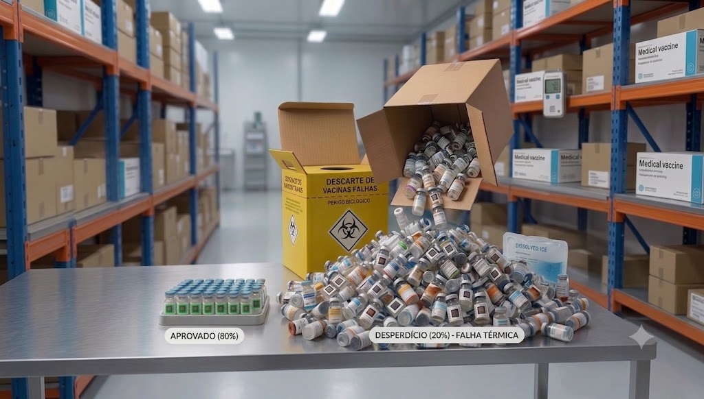
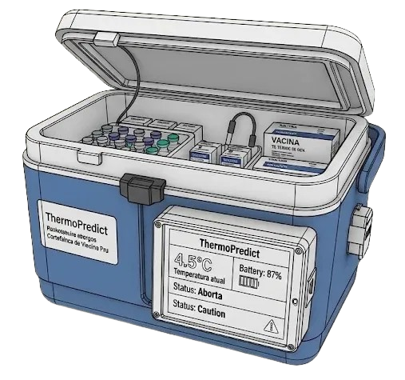
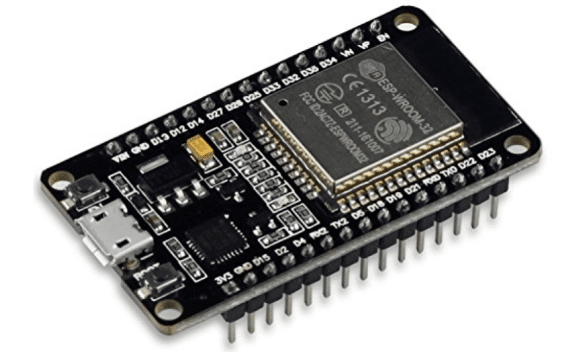
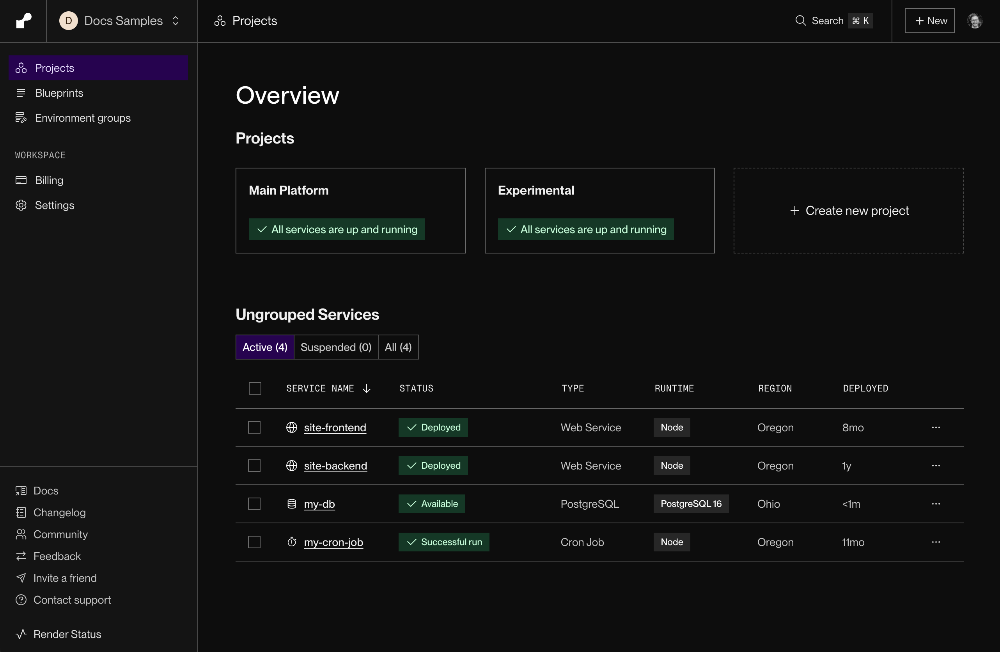
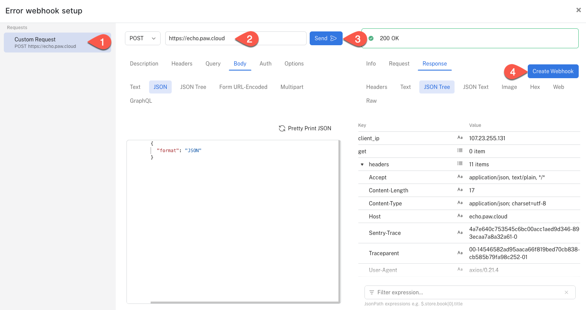

Monitoramento Inteligente e Conectividade para a Cadeia de Frio
Anualmente, milhões de doses de vacinas são inutilizadas devido a falhas no controle térmico.
Cerca de 20% dos produtos sensíveis são danificados durante a logística, resultando em riscos biológicos e prejuízos financeiros massivos.

Registros manuais são imprecisos, descontínuos e sujeitos a esquecimentos ou erros de anotação.
Durante o transporte, gestores perdem a visibilidade em tempo real sobre a integridade térmica dos insumos.
O ThermoPredict é uma solução compacta integrada diretamente em coolers térmicos profissionais.
Com um Display LCD central, permite monitorar temperatura (ex: 4.5°C), carga da bateria e status de segurança (tampa aberta/fechada) sem necessidade de dispositivos externos.

Sensores DS18B20 capturam a temperatura com precisão de ±0.5°C a cada 10 segundos.
O microcontrolador ESP32 gerencia a lógica e envia os dados via WiFi para a nuvem.
A plataforma Render recebe os dados, gera gráficos históricos e envia alertas imediatos.
Garantia de monitoramento contínuo 24 horas por dia, 7 dias por semana.
Monitoramento inteligente em tempo real com análise preditiva e indicadores dinâmicos.
| Recurso | Manual | Termômetro Digital | ThermoPredict |
|---|---|---|---|
| Alertas Online | Não | Não | Sim |
| Histórico na Nuvem | Não | Não | Sim |
| Monitoramento de Tampa | Não | Não | Sim |
| Rastreabilidade GPS | Não | Não | Sim |
Scrum Master (SM)
Product Owner (PO)
Desenvolvedor
Desenvolvedor
Desenvolvedor

ESP32: Potência de processamento e baixo consumo.

Infraestrutura escalável para milhões de logs.

Notificações instantâneas via Webhooks.
Ao mitigar falhas térmicas, o ThermoPredict não apenas economiza insumos caros, mas garante que a imunização seja efetiva para a população.
100% de rastreabilidade do fabricante ao paciente.
Obrigado pela vossa atenção.